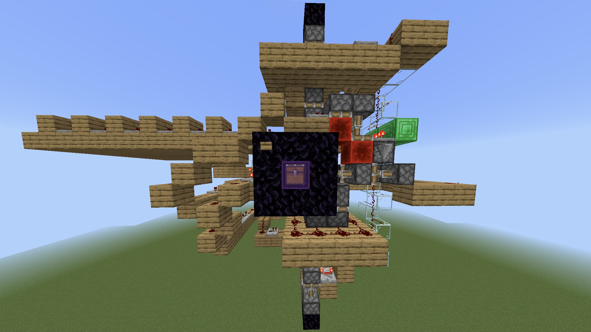
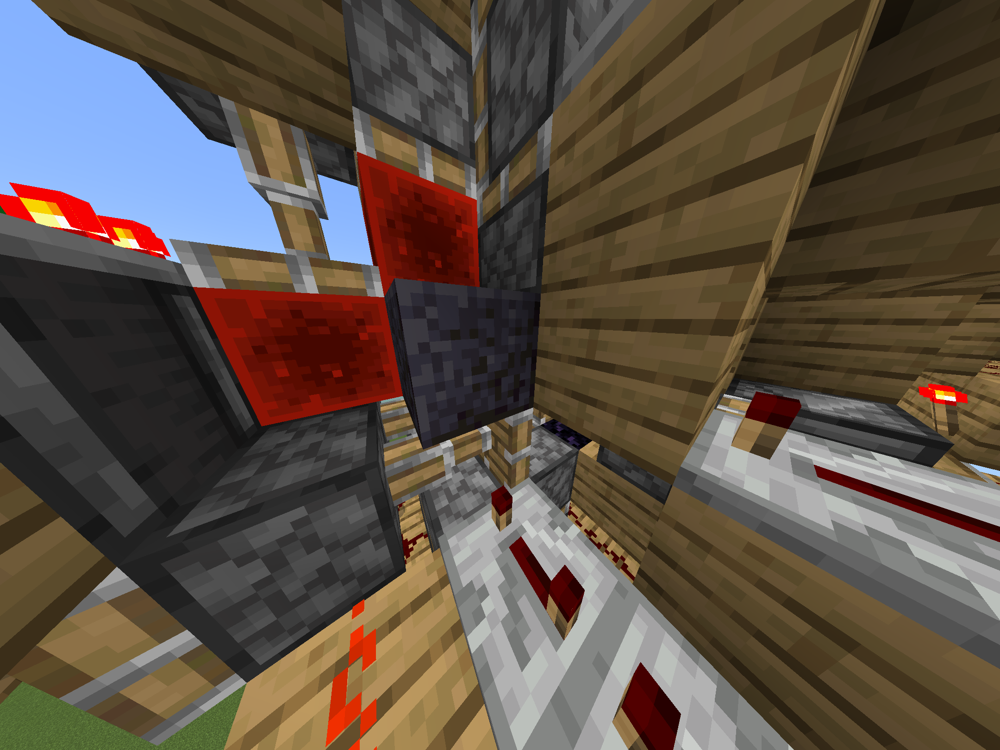
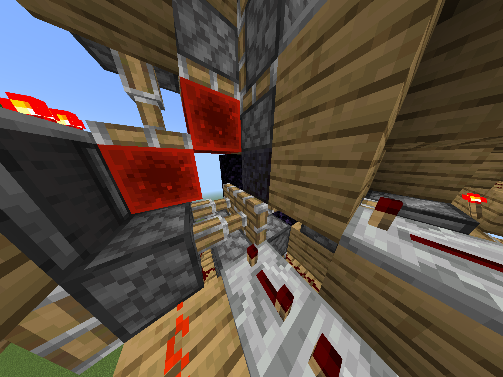
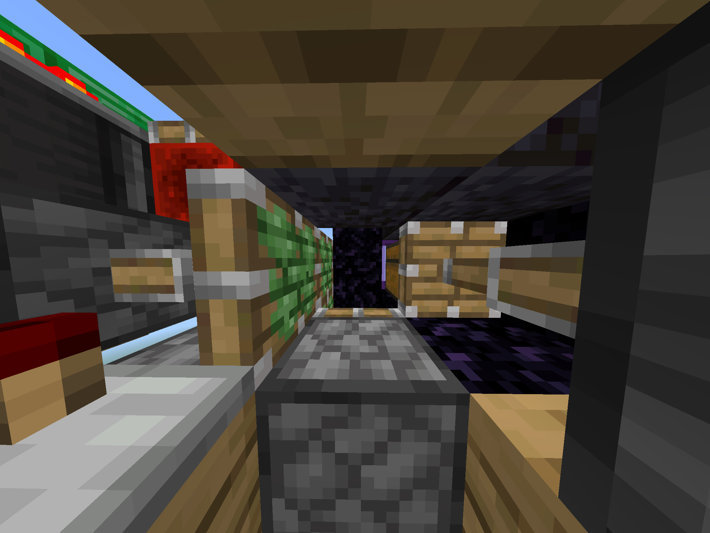
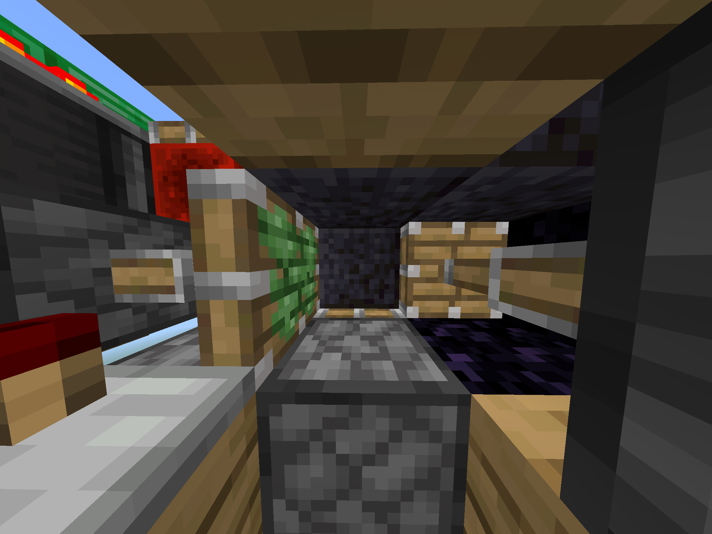
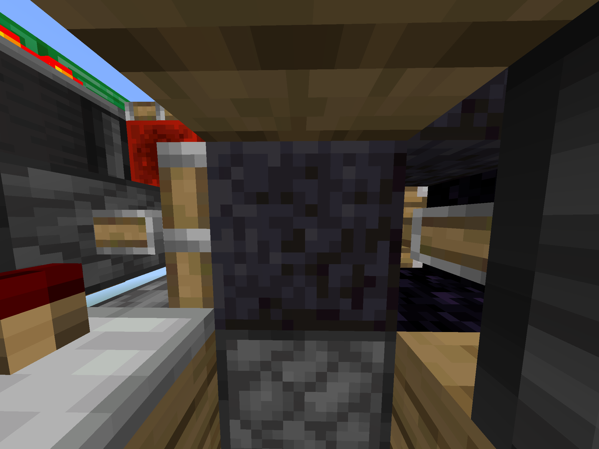
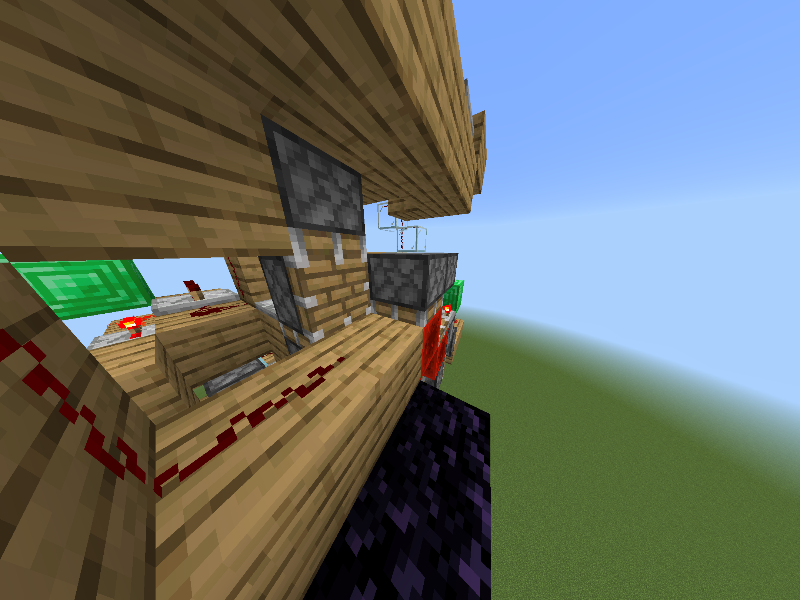
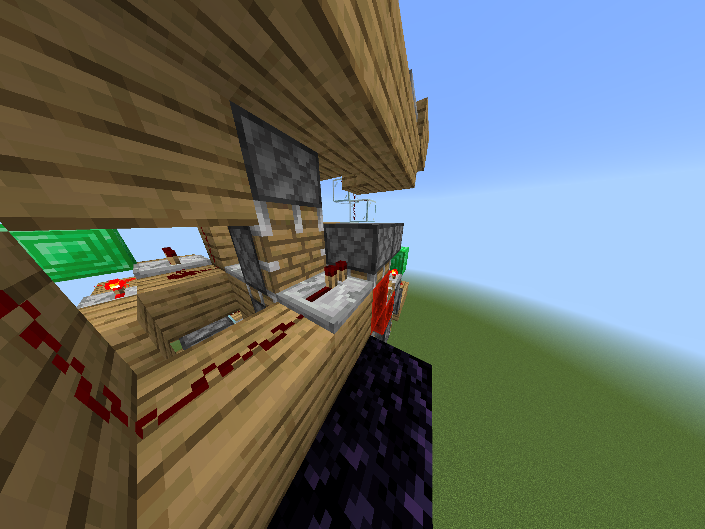

マインクラフトで金庫作ってみた
2026年1月31日
⒈説明
金庫（鍵とかはないけど）をマインクラフトのレッドストーン回路のみで作ってみた。レッドストーン初心者なもんで回路はぐちゃぐちゃだけど…

⒉使い方
ボタンを押すとガラスがしまわれて、もう一度押すと出てくる。（たまにバグる。そして壊れる。直すのめんどくさい。）
⒊配布
とりあえずなにか自分で作ったものを配布したかった。全て統合版です。
クリエイティブ、Windows
ストラクチャーブロックでインポート。周りが削れます。何もないところで試したほうがいいです。
サバイバル、（クリエイティブ）、Windows、スマホ
サバイバルで作りたい人（おらんやろ）はこちら。自分でブロックを置きます。防具立てを置くと設計図が出ます。holoprintの詳しい使い方はここ
クリエイティブ、Windows、スマホ
ダウンロードし、マインクラフトのワールドに適用します。
コマンド/structure load n1_vault ~ ~ ~を実行してください。周りが削れます。何もないところで試したほうがいいです。回転させる時はコマンドに空白と90_degressか180_degressか270_degressをつけてください。
⚠︎注意⚠︎
mcstructureとビヘイビアーパックではこれを行ってください。
エメラルドブロックはないかもしれないです。
①写真の部分を壊します


②写真の部分を壊し、ブロックを2つ置きます



③写真の部分にレッドストーンリピーターを置きます


④完成！